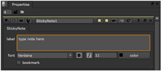

使用 StickyNote 节点，可以向节点图添加注释。注释可以是任何文本或 HTML 标记。通常，它们作为节点树中元素的注释。
| 1。 | 单击要添加注释的节点图部分。 |
| 2. | 选择 其他 > StickyNote 。节点图中会出现一个注释框。 |
| 3. | 在 StickyNote 控件中，在 标签 字段。如果你喜欢，你可以使用 HTML 标记。例如, |
• 要以粗体显示注释，您可以使用 <B> 我注意 </b>。 这将显示为 我的笔记 .
• 要使注释以斜体显示，您可以使用 我的笔记 </i> 。这将显示为 我的笔记 .
• 要在笔记中添加图标，您可以使用 <Img src = "Colorwheel.png"/> 。这增加了 Nuke 色轮图标。只要将图标保存在插件路径目录中，您也可以使用自己的图标。最常见的图像格式工作，但我们建议使用 。巴布亚新几内亚 文件。

|
|